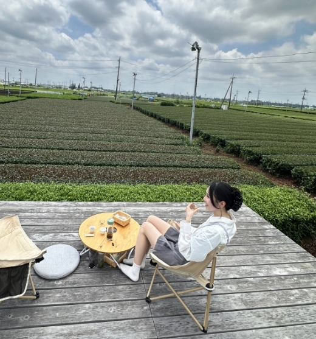
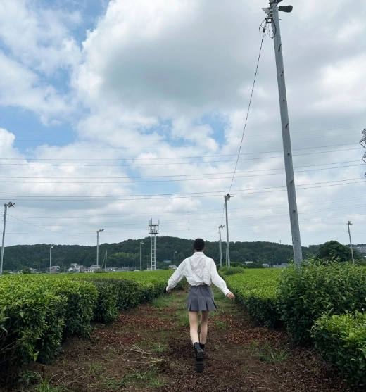
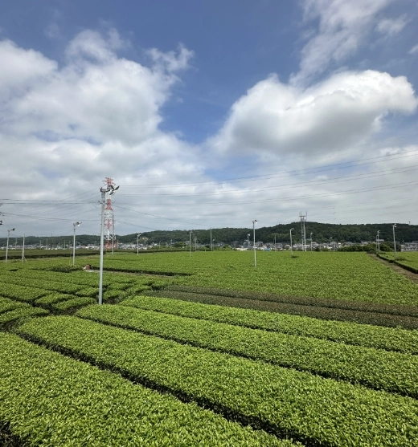
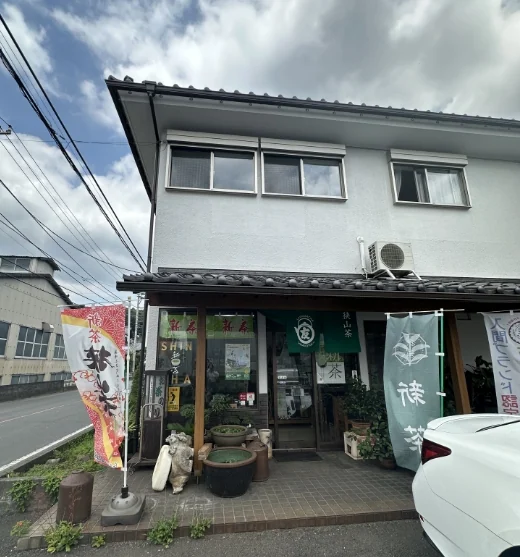
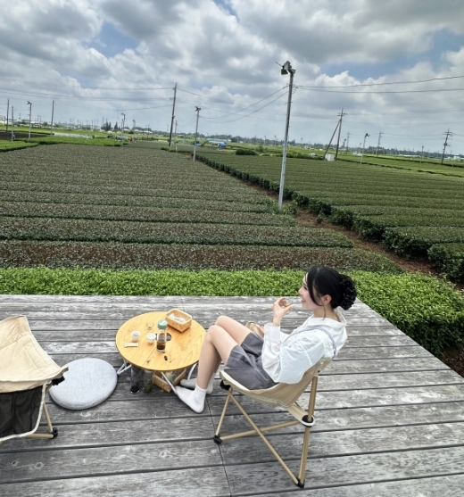
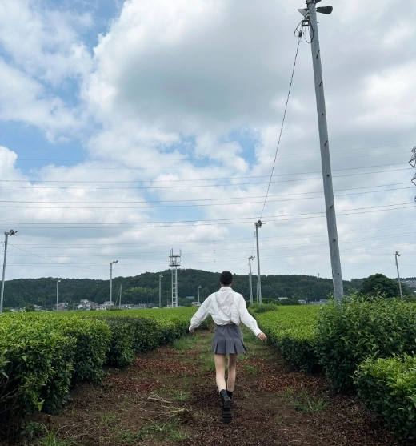
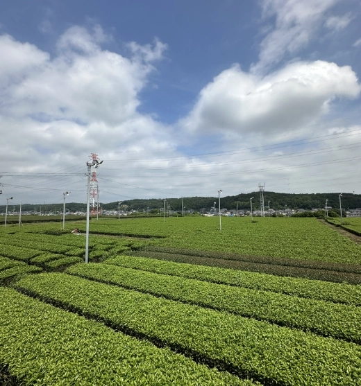
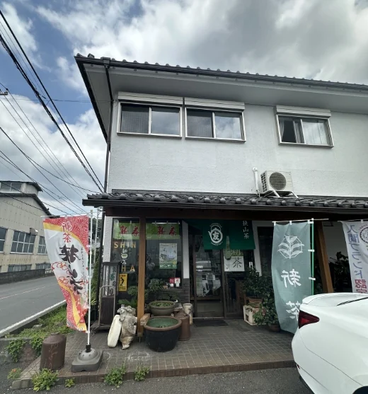

狭山茶畑 茶の輪
埼玉県入間市にある「茶畑テラス 茶の輪」は、狭山茶の畑に囲まれた癒しのスポットです。
県内でも有名な “緑の景色” が楽しめます。
私は 「新緑うたたねプラン」 で訪れ、広がる茶畑を眺めながら、のんびりとした時間を過ごしました。
時期によっては茶摘み体験ができるプランもあり、お茶の香りや手触りを楽しむこともできます。
五感で味わう“お茶の風景” に、心がすっとほどけるようでした。

- 色イメージ
- 黄緑（#8BC34A）
- 見頃
- 5月上旬〜中旬（新芽の時期）
※季節ごとの風景や体験も楽しめます - 住所
- 〒358-0045 埼玉県入間市寺竹745-1
- 営業時間
- 10:00~16:30
- 料金
- ¥3,000~¥3,500
おすすめ撮影スポット

デッキから、茶畑を一望できる１枚。

デッキに座って、茶畑を見渡す１枚。
アクセス
- 車
- 圏央道 入間ICから約2km
青梅ICから約4km
ギャラリー

 






